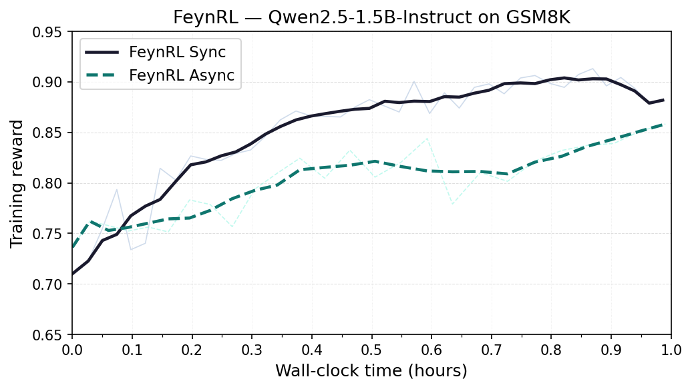
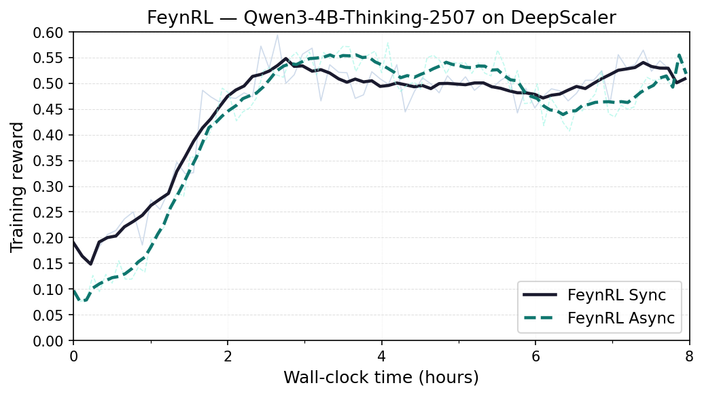

algorithms
New losses and update rules should stay local rather than leaking across the stack.
FeynRL
Built to keep algorithms, rollouts, and orchestration separate enough that new methods stay easy to implement and inspect.
New losses and update rules should stay local rather than leaking across the stack.
Sync and overlap modes make the throughput versus freshness tradeoff explicit.
Distributed training remains visible instead of buried under heavy abstractions.

| run | pass@1 | pass@16 |
|---|---|---|
| base | 12.0% | 26.4% |
| feynrl | 12.2% | 27.0% |

| run | pass@1 | pass@16 |
|---|---|---|
| base | 12.2% | 19.7% |
| feynrl | 27.0% | 40.2% |
Shifting the focus back to the RL algorithm.
read postThe homepage and framing are based on the main FeynRL repository.
open github